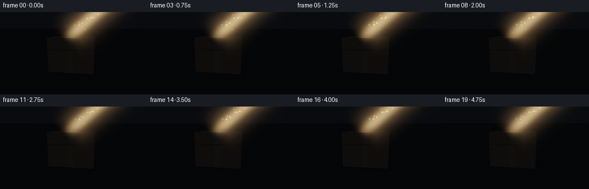
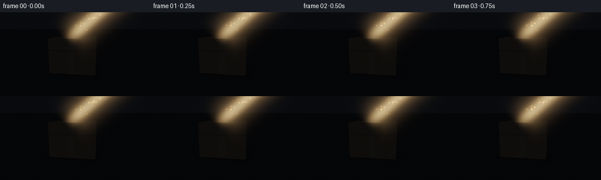
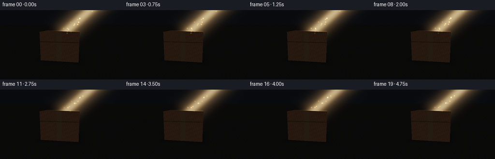
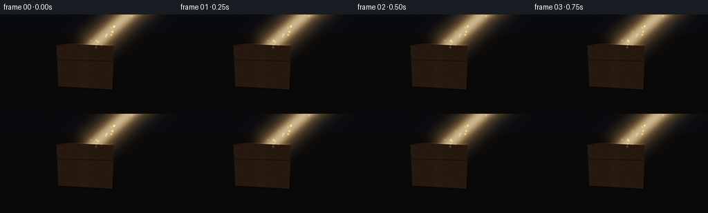
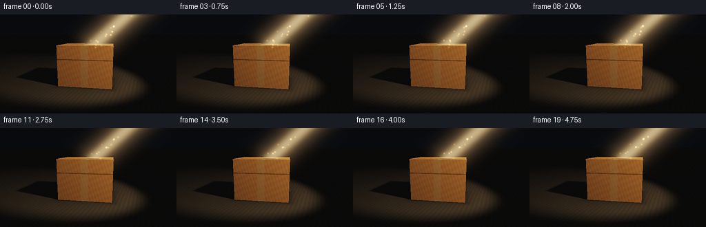
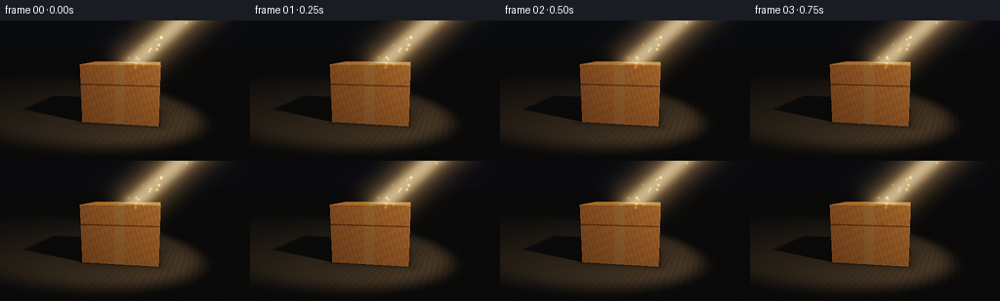

CODING AGENTS AS PIXEL WORLD MODELS
traex/DeepSeek-V4.1-Flash · phygen_045
点击播放 · 原生 RGB 像素
逐轮保存的候选
回放视频、检查图与代码变化。
每份候选均可单独播放。实际图片检查记录在下方工具轨迹中。
候选 01播放与检查图
点击播放 · 原生 RGB 像素


展开代码变化
--- 上一保存版本
+++ 本次保存版本
@@ -0,0 +1,333 @@
+"""Procedural ray-traced shot of a cardboard box caught by a shaft of light."""
+
+from pathlib import Path
+
+import numpy as np
+from PIL import Image, ImageFilter
+
+import artifact_io
+
+
+ROOT = Path(__file__).resolve().parent
+WIDTH, HEIGHT = 256, 144
+FRAMES, FPS = 20, 4.0
+SUPERSAMPLE = 2
+
+BOX_CENTER = np.array([-0.12, 0.44, 0.02], dtype=np.float64)
+BOX_HALF = np.array([0.58, 0.44, 0.39], dtype=np.float64)
+BOX_YAW = -0.10
+
+LIGHT_POS = np.array([2.20, 2.95, 1.52], dtype=np.float64)
+LIGHT_TARGET = np.array([-0.24, 0.50, 0.04], dtype=np.float64)
+BEAM_START = np.array([2.28, 3.02, 1.56], dtype=np.float64)
+BEAM_END = np.array([-0.34, 0.78, 0.27], dtype=np.float64)
+
+
+def normalize(vector):
+ return vector / np.linalg.norm(vector, axis=-1, keepdims=True)
+
+
+def rot_y(vector, angle):
+ cosine, sine = np.cos(angle), np.sin(angle)
+ x = cosine * vector[..., 0] + sine * vector[..., 2]
+ z = -sine * vector[..., 0] + cosine * vector[..., 2]
+ return np.stack((x, vector[..., 1], z), axis=-1)
+
+
+def make_camera(width, height, phase):
+ drift = 0.007 * np.sin(2.0 * np.pi * phase)
+ eye = np.array([0.10 + drift, 1.10 + 0.002 * np.cos(2.0 * np.pi * phase), 3.28])
+ target = np.array([-0.10, 0.43, 0.00])
+ forward = normalize(target - eye)
+ right = normalize(np.cross(forward, np.array([0.0, 1.0, 0.0])))
+ up = normalize(np.cross(right, forward))
+
+ aspect = width / height
+ fov_y = np.deg2rad(38.0)
+ yy, xx = np.mgrid[0:height, 0:width].astype(np.float64)
+ u = (2.0 * (xx + 0.5) / width - 1.0) * np.tan(fov_y * 0.5) * aspect
+ v = (1.0 - 2.0 * (yy + 0.5) / height) * np.tan(fov_y * 0.5)
+ directions = normalize(
+ forward[None, None, :] + u[..., None] * right + v[..., None] * up
+ )
+ origins = np.broadcast_to(eye, directions.shape).copy()
+ return origins, directions
+
+
+def intersect_box(origins, directions, box_center=BOX_CENTER, box_half=BOX_HALF, yaw=BOX_YAW):
+ inverse_rotation = rot_y(origins - box_center, -yaw)
+ local_direction = rot_y(directions, -yaw)
+
+ safe_direction = np.where(np.abs(local_direction) < 1e-10, 1e-10, local_direction)
+ near = (-box_half - inverse_rotation) / safe_direction
+ far = (box_half - inverse_rotation) / safe_direction
+ near, far = np.minimum(near, far), np.maximum(near, far)
+
+ enter_axis = np.argmax(near, axis=-1)
+ t_enter = np.take_along_axis(near, enter_axis[..., None], axis=-1)[..., 0]
+ t_exit = np.min(far, axis=-1)
+ valid = (t_exit >= t_enter) & (t_exit > 1e-5)
+ t_hit = np.where(t_enter > 1e-5, t_enter, t_exit)
+ valid &= t_hit > 1e-5
+
+ local_normal = np.zeros_like(directions)
+ for axis in range(3):
+ selected = enter_axis == axis
+ sign = -np.sign(local_direction[..., axis])
+ local_normal[..., axis] = np.where(selected, sign, local_normal[..., axis])
+ normal = rot_y(local_normal, yaw)
+ return valid, t_hit, normal
+
+
+def intersect_floor(origins, directions):
+ valid = directions[..., 1] < -1e-7
+ t_hit = np.where(valid, -origins[..., 1] / directions[..., 1], np.inf)
+ valid &= t_hit > 1e-5
+ normal = np.zeros_like(directions)
+ normal[..., 1] = 1.0
+ return valid, t_hit, normal
+
+
+def box_local(point):
+ return rot_y(point - BOX_CENTER, -BOX_YAW)
+
+
+def smoothstep(edge0, edge1, value):
+ x = np.clip((value - edge0) / (edge1 - edge0), 0.0, 1.0)
+ return x * x * (3.0 - 2.0 * x)
+
+
+def cardboard_color(points, normals, local_points):
+ base = np.array([0.52, 0.32, 0.16])
+ grain = (
+ 0.92
+ + 0.055 * np.sin(96.0 * points[..., 0] + 31.0 * points[..., 1] + 17.0 * points[..., 2])
+ + 0.035 * np.sin(213.0 * points[..., 2] - 47.0 * points[..., 1])
+ + 0.025 * np.sin(507.0 * points[..., 0] + 119.0 * points[..., 2])
+ )
+ color = base[None, None, :] * grain[..., None]
+
+ top = normals[..., 1] > 0.65
+ front = normals[..., 2] > 0.55
+ side = np.abs(normals[..., 0]) > 0.55
+
+ tape_top = top & (np.abs(local_points[..., 0]) < 0.072)
+ tape_front = front & (np.abs(local_points[..., 0]) < 0.075)
+ tape = tape_top | tape_front
+ tape_color = np.array([0.48, 0.38, 0.23])[None, None, :]
+ color = np.where(tape[..., None], 0.45 * color + 0.55 * tape_color, color)
+
+ # Flute lines and a folded seam make the block read as packaging rather than
+ # a generic cuboid at this small output size.
+ flutes = 0.94 + 0.06 * np.sin(330.0 * local_points[..., 2])
+ color *= np.where((top | front)[..., None], flutes[..., None], 1.0)
+ seam = (front & (np.abs(local_points[..., 1] - 0.15) < 0.012)) | (
+ side & (np.abs(local_points[..., 2]) < 0.012)
+ )
+ color *= np.where(seam[..., None], 0.58, 1.0)
+
+ edge_distance = np.min(box_half_for_points() - np.abs(local_points), axis=-1)
+ edge = smoothstep(0.0, 0.032, edge_distance)
+ color *= (0.72 + 0.28 * edge)[..., None]
+ return color
+
+
+def box_half_for_points():
+ return BOX_HALF[None, None, :]
+
+
+def floor_color(points):
+ grain = (
+ 0.88
+ + 0.06 * np.sin(76.0 * points[..., 0] + 23.0 * points[..., 2])
+ + 0.04 * np.sin(201.0 * points[..., 2] - 41.0 * points[..., 0])
+ )
+ return np.array([0.050, 0.052, 0.054])[None, None, :] * grain[..., None]
+
+
+def light_samples():
+ return [
+ np.array([0.0, 0.0, 0.0]),
+ np.array([0.09, 0.035, 0.0]),
+ np.array([-0.085, 0.045, 0.015]),
+ np.array([0.025, 0.10, -0.035]),
+ np.array([-0.035, 0.025, 0.075]),
+ ]
+
+
+def spot_visibility(points, normals, origins_for_shadow):
+ samples = light_samples()
+ total = np.zeros(points.shape[:-1], dtype=np.float64)
+ spot_direction = normalize(LIGHT_TARGET - LIGHT_POS)
+ cosine_outer = np.cos(np.deg2rad(21.0))
+ cosine_inner = np.cos(np.deg2rad(13.0))
+
+ for offset in samples:
+ light_position = LIGHT_POS + offset
+ to_light = light_position - points
+ distance_sq = np.sum(to_light * to_light, axis=-1)
+ light_direction = to_light / np.sqrt(distance_sq + 1e-12)[..., None]
+ n_dot_l = np.maximum(np.sum(normals * light_direction, axis=-1), 0.0)
+ spot_cos = np.sum(light_direction * spot_direction, axis=-1)
+ cone = smoothstep(cosine_outer, cosine_inner, spot_cos)
+
+ shadow_origin = points + normals * 0.004
+ shadow_valid, shadow_t, _ = intersect_box(shadow_origin, light_direction)
+ shadow_distance = np.sqrt(distance_sq)
+ shadowed = shadow_valid & (shadow_t < shadow_distance - 0.015)
+ total += n_dot_l * cone * (~shadowed) / (1.0 + 0.15 * distance_sq)
+ return total / len(samples)
+
+
+def beam_contribution(origins, directions, t_hit):
+ axis = BEAM_END - BEAM_START
+ axis_length_sq = np.dot(axis, axis)
+ offset = origins - BEAM_START
+ direction_dot_axis = np.sum(directions * axis, axis=-1)
+ offset_dot_axis = np.sum(offset * axis, axis=-1)
+ offset_dot_direction = np.sum(offset * directions, axis=-1)
+ denominator = axis_length_sq - direction_dot_axis * direction_dot_axis
+ denominator = np.where(np.abs(denominator) < 1e-9, 1e-9, denominator)
+
+ ray_t = (direction_dot_axis * offset_dot_axis - axis_length_sq * offset_dot_direction) / denominator
+ axis_t = (offset_dot_axis - direction_dot_axis * offset_dot_direction) / denominator
+ axis_t = np.clip(axis_t, 0.0, 1.0)
+ closest_axis = BEAM_START + axis_t[..., None] * axis
+ closest_ray = origins + np.maximum(ray_t, 0.0)[..., None] * directions
+ radial_distance = np.linalg.norm(closest_ray - closest_axis, axis=-1)
+
+ core_radius = 0.055 + 0.075 * axis_t
+ halo_radius = 0.14 + 0.18 * axis_t
+ core = np.exp(-((radial_distance / core_radius) ** 2))
+ halo = np.exp(-((radial_distance / halo_radius) ** 2))
+ ends = smoothstep(0.0, 0.08, axis_t) * smoothstep(1.0, 0.84, axis_t)
+ visibility = np.clip((t_hit - np.maximum(ray_t, 0.0)) / 0.16 + 1.0, 0.0, 1.0)
+ return (0.34 * core + 0.12 * halo) * ends * visibility
+
+
+def render_frame(frame_index):
+ phase = frame_index / FRAMES
+ width = WIDTH * SUPERSAMPLE
+ height = HEIGHT * SUPERSAMPLE
+ origins, directions = make_camera(width, height, phase)
+
+ floor_valid, floor_t, floor_normal = intersect_floor(origins, directions)
+ box_valid, box_t, box_normal = intersect_box(origins, directions)
+
+ floor_closer = floor_valid & (~box_valid | (floor_t < box_t))
+ box_closer = box_valid & (~floor_valid | (box_t <= floor_t))
+ t_hit = np.where(floor_closer, floor_t, np.where(box_closer, box_t, np.inf))
+ hit_normal = np.where(floor_closer[..., None], floor_normal, box_normal)
+ hit_points = origins + np.where(np.isfinite(t_hit), t_hit, 0.0)[..., None] * directions
+
+ background = np.array([0.0030, 0.0042, 0.0065])
+ color = np.broadcast_to(background, origins.shape).copy()
+ color *= 0.82 + 0.18 * (1.0 - np.clip((origins[..., 1] + directions[..., 1] * 8.0) / 3.0, 0.0, 1.0))[..., None]
+
+ local_points = box_local(hit_points)
+ cardboard = cardboard_color(hit_points, hit_normal, local_points)
+ floor = floor_color(hit_points)
+ albedo = np.where(box_closer[..., None], cardboard, floor)
+
+ spot = spot_visibility(hit_points, hit_normal, origins)
+ direct_color = np.array([3.15, 2.10, 1.10])
+ ambient = np.array([0.020, 0.026, 0.039])
+ diffuse = spot[..., None] * direct_color
+ color = np.where((floor_closer | box_closer)[..., None], albedo * (diffuse + ambient), color)
+
+ # A warm, slightly glossy response on the packing tape and box edges.
+ view = -directions
+ half_vector = normalize(view + normalize(LIGHT_POS - hit_points))
+ facing = np.maximum(np.sum(hit_normal * view, axis=-1), 0.0)
+ specular = np.maximum(np.sum(hit_normal * half_vector, axis=-1), 0.0) ** 34.0
+ tape_like = box_closer & (
+ (np.abs(local_points[..., 0]) < 0.075)
+ | (np.min(box_half_for_points() - np.abs(local_points), axis=-1) < 0.025)
+ )
+ color += (tape_like * specular * spot * 0.32)[..., None] * np.array([1.0, 0.74, 0.44])
+
+ # Slight contact occlusion on the floor makes the box sit on the ground.
+ local_floor = box_local(hit_points)
+ outside = np.maximum(np.abs(local_floor[..., [0, 2]]) - BOX_HALF[[0, 2]], 0.0)
+ contact_distance = np.linalg.norm(outside, axis=-1)
+ contact = 1.0 - 0.52 * np.exp(-contact_distance / 0.075)
+ color *= np.where(floor_closer[..., None], contact[..., None], 1.0)
+
+ beam_strength = 0.93 + 0.05 * np.sin(2.0 * np.pi * (phase + 0.08))
+ beam = beam_contribution(origins, directions, t_hit) * beam_strength
+ beam_color = np.array([1.0, 0.69, 0.37])
+ color += beam[..., None] * beam_color
+
+ # Filmic shoulder and fine ordered dither keep the dark gradients clean.
+ exposure = 1.06
+ color = color * exposure
+ color = (color * (2.51 * color + 0.03)) / (color * (2.43 * color + 0.59) + 0.14)
+ color = np.clip(color, 0.0, 1.0) ** (1.0 / 2.2)
+
+ image = Image.fromarray(np.clip(color * 255.0, 0, 255).astype(np.uint8), "RGB")
+ image = image.resize((WIDTH, HEIGHT), Image.Resampling.LANCZOS)
+ image = image.filter(ImageFilter.UnsharpMask(radius=0.65, percent=42, threshold=2))
+ frame = np.asarray(image).astype(np.float64)
+
+ frame = add_dust(frame, frame_index, phase)
+ yy, xx = np.mgrid[0:HEIGHT, 0:WIDTH]
+ dither = ((xx * 17 + yy * 29 + frame_index * 7) % 7 - 3) * 0.55
+ frame = np.clip(frame + dither[..., None], 0, 255)
+ return frame.astype(np.uint8)
+
+
+def add_dust(frame, frame_index, phase):
+ result = frame.copy()
+ rng = np.random.default_rng(4517)
+ count = 34
+ axis = BEAM_END - BEAM_START
+ axis_length = np.linalg.norm(axis)
+ axis_unit = axis / axis_length
+ helper = np.array([0.0, 1.0, 0.0])
+ side_a = normalize(np.cross(axis_unit, helper))
+ side_b = normalize(np.cross(axis_unit, side_a))
+ eye = np.array([0.10 + 0.007 * np.sin(2.0 * np.pi * phase), 1.10, 3.28])
+ target = np.array([-0.10, 0.43, 0.00])
+ forward = normalize(target - eye)
+ right = normalize(np.cross(forward, np.array([0.0, 1.0, 0.0])))
+ up = normalize(np.cross(right, forward))
+ focal = HEIGHT * 0.5 / np.tan(np.deg2rad(19.0))
+
+ for _ in range(count):
+ along = rng.uniform(0.12, 0.88)
+ angle = rng.uniform(0.0, 2.0 * np.pi)
+ radius = rng.uniform(0.02, 0.13) * np.sqrt(rng.uniform(0.0, 1.0))
+ position = BEAM_START + axis * along
+ position += radius * (np.cos(angle) * side_a + np.sin(angle) * side_b)
+ position += np.array(
+ [
+ 0.010 * np.sin(2.0 * np.pi * phase + angle),
+ 0.018 * (phase - 0.5),
+ 0.006 * np.cos(2.0 * np.pi * phase + angle),
+ ]
+ )
+ camera_space = position - eye
+ depth = np.dot(camera_space, forward)
+ if depth <= 0.2:
+ continue
+ sx = WIDTH * 0.5 + focal * np.dot(camera_space, right) / depth
+ sy = HEIGHT * 0.5 - focal * np.dot(camera_space, up) / depth
+ if not (2 <= sx < WIDTH - 2 and 2 <= sy < HEIGHT - 2):
+ continue
+ strength = rng.uniform(38.0, 110.0) * (0.75 + 0.25 * np.sin(angle + 4.0 * np.pi * phase))
+ for iy in range(int(sy) - 2, int(sy) + 3):
+ for ix in range(int(sx) - 2, int(sx) + 3):
+ distance_sq = (ix + 0.5 - sx) ** 2 + (iy + 0.5 - sy) ** 2
+ weight = np.exp(-distance_sq / 1.45)
+ result[iy, ix] += strength * weight * np.array([1.0, 0.72, 0.40])
+ return result
+
+
+def main():
+ frames = np.stack([render_frame(index) for index in range(FRAMES)])
+ artifact_io.save(frames, ROOT)
+ print(f"saved {FRAMES} frames to {ROOT}")
+
+
+if __name__ == "__main__":
+ main()
候选 02播放与检查图
点击播放 · 原生 RGB 像素


展开代码变化
--- 上一保存版本
+++ 本次保存版本
@@ -17,10 +17,10 @@
BOX_HALF = np.array([0.58, 0.44, 0.39], dtype=np.float64)
BOX_YAW = -0.10
-LIGHT_POS = np.array([2.20, 2.95, 1.52], dtype=np.float64)
-LIGHT_TARGET = np.array([-0.24, 0.50, 0.04], dtype=np.float64)
-BEAM_START = np.array([2.28, 3.02, 1.56], dtype=np.float64)
-BEAM_END = np.array([-0.34, 0.78, 0.27], dtype=np.float64)
+LIGHT_POS = np.array([1.88, 2.62, 1.54], dtype=np.float64)
+LIGHT_TARGET = np.array([-0.16, 0.44, -0.16], dtype=np.float64)
+BEAM_START = np.array([1.95, 2.70, 1.60], dtype=np.float64)
+BEAM_END = np.array([-0.27, 0.58, -0.23], dtype=np.float64)
def normalize(vector):
@@ -159,8 +159,8 @@
samples = light_samples()
total = np.zeros(points.shape[:-1], dtype=np.float64)
spot_direction = normalize(LIGHT_TARGET - LIGHT_POS)
- cosine_outer = np.cos(np.deg2rad(21.0))
- cosine_inner = np.cos(np.deg2rad(13.0))
+ cosine_outer = np.cos(np.deg2rad(27.0))
+ cosine_inner = np.cos(np.deg2rad(19.0))
for offset in samples:
light_position = LIGHT_POS + offset
@@ -230,8 +230,8 @@
albedo = np.where(box_closer[..., None], cardboard, floor)
spot = spot_visibility(hit_points, hit_normal, origins)
- direct_color = np.array([3.15, 2.10, 1.10])
- ambient = np.array([0.020, 0.026, 0.039])
+ direct_color = np.array([3.35, 2.24, 1.18])
+ ambient = np.array([0.075, 0.066, 0.060])
diffuse = spot[..., None] * direct_color
color = np.where((floor_closer | box_closer)[..., None], albedo * (diffuse + ambient), color)
候选 03播放与检查图
点击播放 · 原生 RGB 像素


展开代码变化
--- 上一保存版本
+++ 本次保存版本
@@ -168,7 +168,7 @@
distance_sq = np.sum(to_light * to_light, axis=-1)
light_direction = to_light / np.sqrt(distance_sq + 1e-12)[..., None]
n_dot_l = np.maximum(np.sum(normals * light_direction, axis=-1), 0.0)
- spot_cos = np.sum(light_direction * spot_direction, axis=-1)
+ spot_cos = np.sum(-light_direction * spot_direction, axis=-1)
cone = smoothstep(cosine_outer, cosine_inner, spot_cos)
shadow_origin = points + normals * 0.004
可观测工具轨迹
实际执行的命令与返回图片。
命令 1exit 0
/bin/bash -c "pwd && rg --files -g 'prompt.txt' -g 'GENERATION_RULES.md' -g 'task_spec.json' -g '"'!*.mp4'"' -g '"'!*.png'"'"
命令 2exit 0
/bin/bash -c "git status --short && find . -maxdepth 2 -type f -printf '%p %s bytes\\n' | sort | head -100"
命令 3exit 0
/bin/bash -c 'cat prompt.txt'
命令 4exit 0
/bin/bash -c 'cat GENERATION_RULES.md'
命令 5exit 0
/bin/bash -c "cat task_spec.json && sed -n '1,240p' artifact_io.py"
命令 6exit 1
/bin/bash -c 'python generate.py'
命令 7exit 0
/bin/bash -c 'python generate.py'
命令 8exit 0
/bin/bash -c 'which chafa || true; which viu || true; which jp2 || true; which ffmpeg || true'
命令 9exit 0
/bin/bash -c "find . -maxdepth 2 -type f -printf '%p %s bytes\\n' | sort | tail -40"
命令 10exit 0
/bin/bash -c "python - <<'PY'
from PIL import Image
import numpy as np
im=np.array(Image.open('inspection.png'))
print('inspection', im.shape, im.min(), im.max(), im.mean(axis=(0,1)))
for i in [0,4,8,12,16,19]:
a=np.array(Image.open(f'frames/{i:02d}.png'))
print(i, 'mean', a.mean(axis=(0,1)).round(1), 'p99', np.percentile(a,99,axis=(0,1)).round(1), 'range', (a.min(),a.max()))
PY"命令 11exit 0
/bin/bash -c "python - <<'PY'
from PIL import Image, ImageOps
import numpy as np
im=Image.open('frames/00.png').convert('L')
# crop full, resize 96x54, autocontrast to expose structure
im=ImageOps.autocontrast(im, cutoff=0.5).resize((96,54), Image.Resampling.LANCZOS)
a=np.asarray(im)
chars=' .,:;irsXA253hMHGS#9B&@'
for row in a:
print(''.join(chars[int(v)*(len(chars)-1)//255] for v in row))
PY"命令 12exit 0
/bin/bash -c "python - <<'PY'
from PIL import Image
import numpy as np
for i in [0]:
a=np.array(Image.open(f'frames/{i:02d}.png'))
l=a.mean(2)
for th in [32,64,96,128,160,192,224]: print(th, (l>th).mean())
print('bright coords bbox', np.where(l>160)[1].min(),np.where(l>160)[1].max(),np.where(l>160)[0].min(),np.where(l>160)[0].max())
# row means
for y in range(0,144,12): print(y, round(l[y:y+12].mean(),1), round(l[y:y+12].max(),1))
PY"命令 13exit 0
/bin/bash -c "python - <<'PY'
from PIL import Image
import numpy as np
a=np.array(Image.open('frames/00.png')).astype(float)
# print block max/mean 16x16
for by in range(0,144,16):
print(' '.join(f'{a[by:by+16,bx:bx+16].mean():5.1f}' for bx in range(0,256,16)))
print('brightest pixels')
l=a.mean(2); inds=np.dstack(np.unravel_index(np.argsort(l.ravel())[-30:],l.shape))[0]
for y,x in inds[::-1][:20]: print((x,y), a[y,x].astype(int), round(l[y,x],1))
PY"命令 14exit 0
/bin/bash -c "python - <<'PY'
from PIL import Image
import numpy as np
a=np.array(Image.open('frames/00.png')).astype(float)
# exact box surface rough mask using bright rows? compare saturation / x spans at rows
for y in range(0,144,4):
r=a[y].mean(1)
inds=np.where(r>10)[0]
print(y, (inds.min(),inds.max(),len(inds)) if len(inds) else None, 'peak',r.max().round(1))
PY"命令 15exit 0
/bin/bash -c "python - <<'PY'
from PIL import Image
im=Image.open('frames/00.png')
im.resize((768,432),Image.Resampling.NEAREST).save('.tmp/frame00_big.png')
PY"命令 16exit 0
/bin/bash -c "python - <<'PY'
import numpy as np
from generate import make_camera, BOX_CENTER, BOX_HALF, BOX_YAW, rot_y, BEAM_START, BEAM_END, LIGHT_POS
# derive projection with no supersampling
eye=np.array([0.10,1.10,3.28]); target=np.array([-0.10,.43,0]); f=(target-eye);f/=np.linalg.norm(f);r=np.cross(f,[0,1,0]);r/=np.linalg.norm(r);u=np.cross(r,f);u/=np.linalg.norm(u); focal=144*.5/np.tan(np.deg2rad(19))
def p(P):
d=P-eye; dep=np.dot(d,f); return (128+focal*np.dot(d,r)/dep,72-focal*np.dot(d,u)/dep,dep)
corners=[]
for sx in [-1,1]:
for sy in [-1,1]:
for sz in [-1,1]: corners.append(BOX_CENTER+rot_y(np.array([sx*BOX_HALF[0],sy*BOX_HALF[1],sz*BOX_HALF[2]]),BOX_YAW))
for name,P in [('eye',eye),('beam_start',BEAM_START),('beam_end',BEAM_END),('light',LIGHT_POS)]: print(name,P,p(P))
for c in corners: print('corner',c.round(2),tuple(round(v,1) for v in p(c)))
PY"命令 17exit 0
/bin/bash -c "python - <<'PY'
import numpy as np
from generate import make_camera, intersect_box, intersect_floor
eye,dirs=make_camera(256,144,0)
fv,ft,fn=intersect_floor(eye,dirs); bv,bt,bn=intersect_box(eye,dirs)
fc=fv&(~bv|(ft<bt)); bc=bv&(~fv|(bt<=ft))
print('floor',fc.mean(),'box',bc.mean())
# rows by box/floor/none
for y in range(0,144,8):
print(y, 'box',bc[y:y+8].mean().round(3),'floor',fc[y:y+8].mean().round(3),'bg',(1-bc[y:y+8].mean()-fc[y:y+8].mean()).round(3))
PY"命令 18exit 0
/bin/bash -c "python - <<'PY' import numpy as np from generate import make_camera, intersect_box, intersect_floor, spot_visibility, box_local, BOX_CENTER, BOX_HALF for phase in [0,.25,.5,.75]: e,d=make_camera(256,144,phase);fv,ft,fn=intersect_floor(e,d);bv,bt,bn=intersect_box(e,d) fc=fv&(~bv|(ft<bt)); bc=bv&(~fv|(bt<=ft)); t=np.where(fc,ft,np.where(bc,bt,0));p=e+t[...,None]*d;n=np.where(fc[...,None],fn,bn) s=spot_visibility(p,n,e) print(phase, 'box spot',s[bc].mean(),np.percentile(s[bc],[10,50,90]), 'floor spot',s[fc].mean(),np.percentile(s[fc],[10,50,90])) PY"
命令 19exit 0
/bin/bash -c "python - <<'PY'
import numpy as np
from generate import *
e,d=make_camera(256,144,0);fv,ft,fn=intersect_floor(e,d);bv,bt,bn=intersect_box(e,d);fc=fv&(~bv|(ft<bt));bc=bv&(~fv|(bt<=ft));t=np.where(fc,ft,np.where(bc,bt,0));p=e+t[...,None]*d;n=np.where(fc[...,None],fn,bn)
for off in light_samples():
lp=LIGHT_POS+off;to=lp-p;ds=np.sum(to*to,-1);ld=to/np.sqrt(ds+1e-12)[...,None];ndl=np.maximum(np.sum(n*ld,-1),0);sd=normalize(LIGHT_TARGET-LIGHT_POS);sc=np.sum(ld*sd,-1);co=np.cos(np.deg2rad(21));ci=np.cos(np.deg2rad(13));cone=smoothstep(co,ci,sc);sho=p+n*.004;sv,st,sn=intersect_box(sho,ld);dist=np.sqrt(ds);shad=sv&(st<dist-.015)
print('box ndl',ndl[bc].mean(),'cos',sc[bc].mean(),np.percentile(sc[bc],[10,50,90]),'cone',cone[bc].mean(),'shad',shad[bc].mean(),'sv',sv[bc].mean())
print('floor ndl',ndl[fc].mean(),'cos',sc[fc].mean(),np.percentile(sc[fc],[10,50,90]),'cone',cone[fc].mean(),'shad',shad[fc].mean(),'sv',sv[fc].mean())
PY"命令 20exit 0
/bin/bash -c "python - <<'PY'
import numpy as np
from generate import *
e,d=make_camera(256,144,0);fv,ft,fn=intersect_floor(e,d);bv,bt,bn=intersect_box(e,d);fc=fv&(~bv|(ft<bt));bc=bv&(~fv|(bt<=ft));t=np.where(fc,ft,np.where(bc,bt,0));p=e+t[...,None]*d;n=np.where(fc[...,None],fn,bn)
for name,m in [('box',bc),('floor',fc)]:
ld=normalize(LIGHT_POS-p);sc=np.sum(ld*normalize(LIGHT_TARGET-LIGHT_POS),-1);co=np.cos(np.deg2rad(21));ci=np.cos(np.deg2rad(13));cone=smoothstep(co,ci,sc)
print(name,'cone',cone[m].mean(),np.percentile(cone[m],[0,10,50,90,100]))
PY"命令 21exit 0
/bin/bash -c 'python generate.py'
命令 22exit 0
/bin/bash -c "python - <<'PY'
from PIL import Image
import numpy as np
for i in [0,4,8,12,16,19]:
a=np.array(Image.open(f'frames/{i:02d}.png')).astype(float); l=a.mean(2)
print(i,'mean',a.mean((0,1)).round(1),'pct',np.percentile(l,[50,90,95,99]).round(1),'brightbbox', (np.where(l>140)[1].min(),np.where(l>140)[1].max(),np.where(l>140)[0].min(),np.where(l>140)[0].max()) if (l>140).any() else None)
PY"命令 23exit 0
/bin/bash -c "python - <<'PY'
from PIL import Image
import numpy as np
a=np.array(Image.open('frames/00.png')).astype(float)
for by in range(0,144,8):
print(f'{by:3}', ' '.join(f'{a[by:by+8,bx:bx+8].mean():5.1f}' for bx in range(0,256,8)))
PY"命令 24exit 0
/bin/bash -c "python - <<'PY'
import numpy as np
from generate import *
e,d=make_camera(256,144,0);fv,ft,fn=intersect_floor(e,d);bv,bt,bn=intersect_box(e,d);fc=fv&(~bv|(ft<bt));bc=bv&(~fv|(bt<=ft));t=np.where(fc,ft,np.where(bc,bt,0));p=e+t[...,None]*d;n=np.where(fc[...,None],fn,bn)
s=spot_visibility(p,n,e)
print('spot box',np.percentile(s[bc],[0,10,25,50,75,90,100]))
print('spot floor',np.percentile(s[fc],[0,10,25,50,75,90,100]))
# get projected masks region stats
for name,m in [('box',bc),('floor',fc)]:
ys,xs=np.where(m)
print(name, 'x',xs.min(),xs.max(),'y',ys.min(),ys.max())
# light geometry
ld=normalize(LIGHT_POS-p)
print('box cosine',np.percentile(np.sum(ld[bc]*normalize(LIGHT_TARGET-LIGHT_POS),-1),[0,10,50,90,100]))
print('floor cosine',np.percentile(np.sum(ld[fc]*normalize(LIGHT_TARGET-LIGHT_POS),-1),[0,10,50,90,100]))
PY"命令 25exit 0
/bin/bash -c "python - <<'PY'
import numpy as np
from generate import *
e,d=make_camera(256,144,0);fv,ft,fn=intersect_floor(e,d);bv,bt,bn=intersect_box(e,d);fc=fv&(~bv|(ft<bt));bc=bv&(~fv|(bt<=ft));t=np.where(fc,ft,np.where(bc,bt,0));p=e+t[...,None]*d;n=np.where(fc[...,None],fn,bn)
s=spot_visibility(p,n,e)
for y in range(0,144,12):
print(y, 'spotbox', s[y:y+12][bc[y:y+12]].mean() if bc[y:y+12].any() else None,'spotfloor',s[y:y+12][fc[y:y+12]].mean() if fc[y:y+12].any() else None)
# sample one face center
for P in [BOX_CENTER+np.array([0,0.44,0.39]),BOX_CENTER+np.array([0,0.44,-.39]),np.array([0,0,0]),np.array([0,0,.4]),np.array([0,0,-.4]),np.array([.4,0,0])]:
to=LIGHT_POS-P;ld=to/np.linalg.norm(to);print('P',P,'cos',np.dot(ld,normalize(LIGHT_TARGET-LIGHT_POS)))
PY"命令 26exit 0
/bin/bash -c 'python generate.py'
命令 27exit 0
/bin/bash -c "python - <<'PY'
from PIL import Image
import numpy as np
for i in [0,4,8,12,16,19]:
a=np.array(Image.open(f'frames/{i:02d}.png')).astype(float); l=a.mean(2)
print(i,'mean',a.mean((0,1)).round(1),'pct',np.percentile(l,[50,90,95,99]).round(1),'brightbbox', (np.where(l>140)[1].min(),np.where(l>140)[1].max(),np.where(l>140)[0].min(),np.where(l>140)[0].max()) if (l>140).any() else None)
PY"命令 28exit 0
/bin/bash -c "python - <<'PY'
from PIL import Image
import numpy as np
a=np.array(Image.open('frames/00.png')).astype(float)
for by in range(0,144,8):
print(f'{by:3}', ' '.join(f'{a[by:by+8,bx:bx+8].mean():5.1f}' for bx in range(0,256,8)))
PY"命令 29exit 0
/bin/bash -c "python - <<'PY'
from PIL import Image
import numpy as np
prev=None
for i in range(20):
a=np.array(Image.open(f'frames/{i:02d}.png')).astype(float)
if prev is not None:
print(i, 'MAE',round(np.abs(a-prev).mean(),3),'changed',round((np.abs(a-prev)>2).mean(),4))
prev=a
PY"命令 30exit 0
/bin/bash -c "python - <<'PY'
from PIL import Image
import numpy as np
# Generate a high-contrast grayscale edge map as ASCII to inspect box and shadow silhouette.
a=np.array(Image.open('frames/00.png').convert('L')).astype(float)
# Sobel-ish horizontal/vertical gradients
gx=np.abs(np.diff(a,axis=1)); gy=np.abs(np.diff(a,axis=0)); g=np.zeros_like(a); g[:,:-1]+=gx; g[:-1]+=gy
# downsample max-pool
g=g[:144,:256].reshape(48,3,85,3).max((1,3)) if False else g
chars=' .:-=+*#%@'
for y in range(0,144,3):
print(''.join(chars[min(9,int(g[y:y+3,x:x+3].max()/14))] for x in range(0,256,3)))
PY"命令 31exit 0
/bin/bash -c "python - <<'PY'
from PIL import Image
import numpy as np
a=np.array(Image.open('frames/00.png')).astype(float); l=a.mean(2)
chars=' .:-=+*#%@'
for y in range(0,144,3):
print(''.join(chars[min(9,int(l[y:y+3,x:x+3].mean()/25.6))] for x in range(0,256,3)))
PY"命令 32exit 0
/bin/bash -c "python - <<'PY'
from PIL import Image
import numpy as np
# Measure cast shadow contrast on floor. Use rows y>=110 and compare box-side vs beam patch.
a=np.array(Image.open('frames/00.png')).astype(float);l=a.mean(2)
for y0,y1,x0,x1,name in [(110,125,20,70,'left'),(110,125,95,130,'shadow?'),(110,125,140,180,'lit?'),(125,143,0,80,'lowerleft'),(125,143,120,190,'lowerlit')]:
q=l[y0:y1,x0:x1]; print(name,round(q.mean(),1),round(q.std(),1),round(np.percentile(q,90),1))
PY"命令 33exit 1
/bin/bash -c "python - <<'PY'
import numpy as np
from PIL import Image
from generate import *
a=np.array(Image.open('frames/00.png')).astype(float)
e,d=make_camera(256,144,0);fv,ft,fn=intersect_floor(e,d);bv,bt,bn=intersect_box(e,d);fc=fv&(~bv|(ft<bt));bc=bv&(~fv|(bt<=ft));t=np.where(fc,ft,np.where(bc,bt,0));p=e+t[...,None]*d;n=np.where(fc[...,None],fn,bn)
s=spot_visibility(p,n,e)
# masks top, front, side based normal
for name,m in [('top',bc&(bn[...,1]>.7)),('front',bc&(bn[...,2]>.7)),('side',bc&(np.abs(bn[...,0])>.7))]:
vals=a[m];print(name,'n',m.sum(),'rgb',vals.mean(0).round(1),'median',np.median(vals,0).round(1),'lum range',np.percentile(vals.mean(1),[5,50,95]).round(1),'spot',np.percentile(s[m],[5,50,95]).round(2))
for name,m in [('floor_lit',fc&(s>.15)),('floor_shadow',fc&(s<.01)),('floor_all',fc)]:
vals=a[m]; print(name,'n',m.sum(),'rgb',vals.mean(0).round(1),'lum range',np.percentile(vals.mean(1),[5,50,95]).round(1))
PY"命令 34exit 0
/bin/bash -c "python - <<'PY'
import numpy as np
from PIL import Image
from generate import *
a=np.array(Image.open('frames/00.png')).astype(float)
e,d=make_camera(256,144,0);fv,ft,fn=intersect_floor(e,d);bv,bt,bn=intersect_box(e,d);fc=fv&(~bv|(ft<bt));bc=bv&(~fv|(bt<=ft));t=np.where(fc,ft,np.where(bc,bt,0));p=e+t[...,None]*d;n=np.where(fc[...,None],fn,bn)
s=spot_visibility(p,n,e)
for name,m in [('floor_lit',fc&(s>.15)),('floor_shadow',fc&(s<.01)),('floor_all',fc)]:
vals=a[m]; print(name,'n',m.sum(),'rgb',vals.mean(0).round(1),'lum range',np.percentile(vals.mean(1),[5,50,95]).round(1))
PY"命令 35exit 0
/bin/bash -c "python - <<'PY'
import numpy as np
from PIL import Image
from generate import *
a=np.array(Image.open('frames/00.png')).astype(float);l=a.mean(2)
e,d=make_camera(256,144,0);fv,ft,fn=intersect_floor(e,d);bv,bt,bn=intersect_box(e,d);fc=fv&(~bv|(ft<bt));bc=bv&(~fv|(bt<=ft));t=np.where(fc,ft,np.where(bc,bt,0));p=e+t[...,None]*d;n=np.where(fc[...,None],fn,bn)
s=spot_visibility(p,n,e)
# coarse mask of spot shadow shape
chars=' .:-=+*#%@'
for y in range(30,144,4):
row=''
for x in range(0,256,4):
if bc[y:y+4,x:x+4].mean()>.5:c='B'
elif fc[y:y+4,x:x+4].mean()>.5:
v=s[y:y+4,x:x+4].mean();c=chars[min(9,int(v/.5*9))]
else:c=' '
row+=c
print(row)
PY"命令 36exit 0
/bin/bash -c "python - <<'PY'
from PIL import Image
import numpy as np
# contact sheet of 20 frames at 128x72, 5 cols x 4 rows for temporal visual inspection
ims=[Image.open(f'frames/{i:02d}.png').resize((128,72),Image.Resampling.LANCZOS) for i in range(20)]
out=Image.new('RGB',(5*128,4*72))
for i,im in enumerate(ims):out.paste(im,((i%5)*128,(i//5)*72))
out.resize((1280,576),Image.Resampling.NEAREST).save('.tmp/all_frames.png')
PY"命令 37exit 0
/bin/bash -c "python -m py_compile generate.py && python - <<'PY'
from pathlib import Path
from PIL import Image
import json, numpy as np
spec=json.loads(Path('task_spec.json').read_text())
files=sorted(Path('frames').glob('*.png'))
assert len(files)==spec['frames'],len(files)
for p in files:
im=Image.open(p); assert im.size==(spec['width'],spec['height']) and im.mode=='RGB'
with np.load('pixels.npz') as data:
print('pixels',data['pixels'].shape,data['pixels'].dtype)
print('frames',len(files),'size',Image.open(files[0]).size,'player',Path('index.html').stat().st_size)
PY"保存候选 3 份；完成命令 37 次；可验证图片返回 0 张。原始 API 响应与完整日志保留在本地。